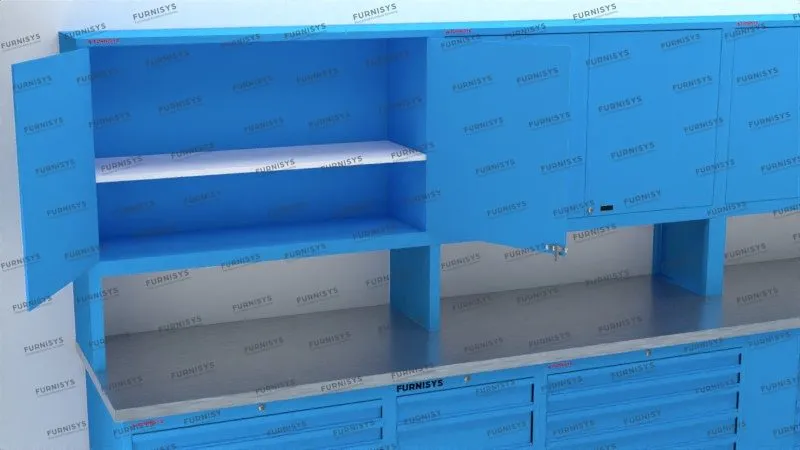
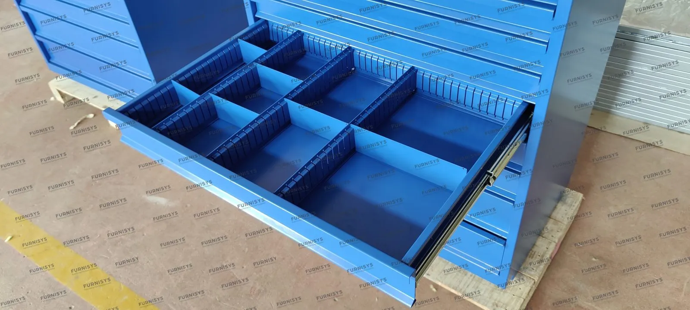
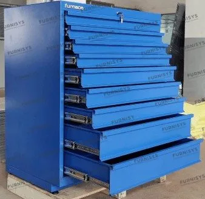

Lathe Machining Zone
Compact Workstations for Smarter Production
Integrated Worksurface and Tool Storage Beside Lathes
In every Lathe Machining Zone, efficiency depends not only on the machines but also on the support systems around them. Operators working on valves and precision parts need a setup that allows them to complete secondary tasks, like quick inspections, fittings, or polishing, without leaving the machine area.
But in most facilities, floor space is limited. This creates a challenge: how do you provide operators with the right workspace while keeping everything compact, organized, and close to the lathe machines?
That was the exact requirement when a valve manufacturing plant reached out for a solution.
The Challenge -
Space, Storage, and Stability
Inside the Lathe Machining Zone, the client wanted a compact workstation that could sit right beside the lathes. The unit had to provide:
A durable work surface for handling freshly machined parts.
Integrated storage for lathe tools, inserts, and consumables.
Vibration resistance, since the area was prone to machine movements.
Mobility, so the workstation could be relocated during layout changes.
In short, it wasn’t about placing a simple table near the machine. The client needed a compact, multifunctional setup, a worksurface, storage, and mobility solution rolled into one.
Compact Base Cabinet with GI-Cladded Worktop
To meet the need, Furnisys designed a specialized base cabinet workstation built for the lathe-side environment.
GI-Cladded Worktop for Reliability
The worktop was covered with GI cladding, tough, flat, and abrasion-resistant. This surface allowed operators to safely place valve stems, actuator shafts, threaded housings, and other freshly machined components without risk of damage.
The GI-clad surface absorbed nearby vibrations, maintaining precision during quick checks, minor fittings, or polishing work. Operators could work directly beside the machine without compromising accuracy.


Storage That Works as Hard as You Do
The base cabinet featured a smart mix of drawers and a lockable drawer system. Each drawer carried a load capacity of up to 65 kg-strong enough for heavy-duty lathe tools, inserts, coolant bottles, toolbars, and polishing papers.
This arrangement kept everything within arm’s reach, reduced clutter around the machines, and saved time otherwise spent walking to distant tool rooms. By organizing tools directly beside the lathe, the workflow became faster and more efficient.
Built for Movement and Stability
Mobility was another critical factor in the Lathe Machining Zone. Machine layouts change, maintenance requires shifting, and flexibility is key in a modern facility.
To solve this, the cabinet was fitted with a fork truck base, allowing quick relocation whenever needed. Once in position, the built-in levelling feet ensured stability - even on uneven trimix flooring. This combination prevented unwanted vibrations from disturbing tasks on the worksurface.

Why This Solution Works
The Furnisys workstation delivered more than just convenience, it created a direct impact on daily operations:
Workflow Efficiency
No more carrying freshly machined parts across zones. Tasks like dimensional checks or fittings could be done immediately beside the lathe.
Operator Comfort
The ergonomic design supported natural working postures, reducing fatigue during repetitive tasks.
Organized Storage
Tools, inserts, and consumables were always accessible, keeping the machining area clutter-free.
Adaptability
With mobility and vibration resistance, the setup easily fit into the dynamic environment of the lathe section.
A Smarter Lathe Machining Zone
By combining a compact worksurface, durable storage, and easy mobility, Furnisys created a workstation that truly matched the demands of the Lathe Machining Zone.
For valve manufacturers, this meant faster secondary processes, reduced downtime, and better precision in assembly and inspection tasks. For operators, it meant less fatigue, better organization, and smoother workflows.
Conclusion
In the high-pressure world of machining, every small improvement makes a big difference. A thoughtfully designed workstation beside the lathes is not just about convenience, it directly enhances productivity, safety, and operator well-being.
That’s what the Furnisys solution achieved: a compact, resilient, and ergonomic workstation tailored for the Lathe Machining Zone.